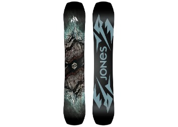
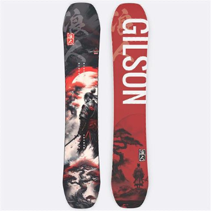
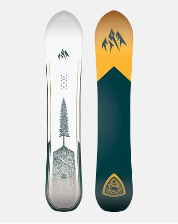
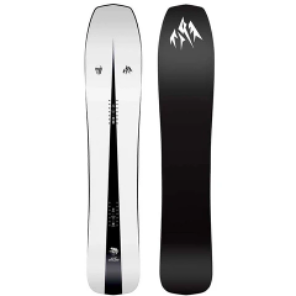

What type of boarding do you like?
All-Mountain Snowboard
Description: All-mountain boards are versatile and designed to handle any terrain—from groomers to powder runs. They offer a balanced mix of stability, flexibility, and control for riders who like to explore everywhere.
Freestyle Snowboard
Description: Freestyle boards are light, flexible, and built for jumps, spins, and tricks in the terrain park. Their twin-tip shape makes it easy to ride both regular and switch with smooth control.
Freeride Snowboard
Description: Freeride boards are made for carving through deep powder and steep, off-trail terrain. They’re usually stiffer with a directional shape for strong edge hold and speed in challenging conditions.
Powder Snowboard
Description: Powder snowboards are designed for deep, soft snow days when you want to float effortlessly. They usually have a wider nose, a tapered tail, and a setback stance to keep you gliding smoothly over fresh powder.